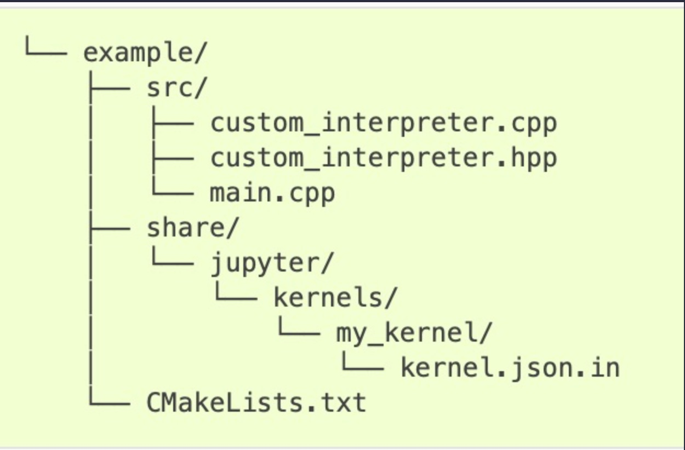

title: Build Custom Kernel
description: This Notebook will detail how to implement a customer kernel with support for IPython which Xeus-Lua does not do out-of-the-box.
date: 2024-01-04
jupytext:
formats: md:myst
text-representation
%%html
<style>
body {
--vscode-font-family: "lmroman17-regular"
}
</style>
Building a Custom Jupyter Notebook Kernel¶
I found when starting the Lua Programming Udemy course that the stock xeus-lua kernel was not dynamic enough to allow so-called magic commands offered by the IPython Kernel. Specifically, I could not run the lua code as files that receive user input.
In reaction –and at risk of becoming too granular– I am taking this opportunity to learn how to build my own custom Jupyter kernel.
:::{important} Objectives
The objective of this exercise is to build a custom lua kernel that allows for the use of magic shell commands within the lua code cells.
:::
Implementing a Kernel¶
In most of the cases, the base kernel implementation is enough, and creating a kernel only means implementing the interpreter part.
The structure of our project should at least look like the following:
